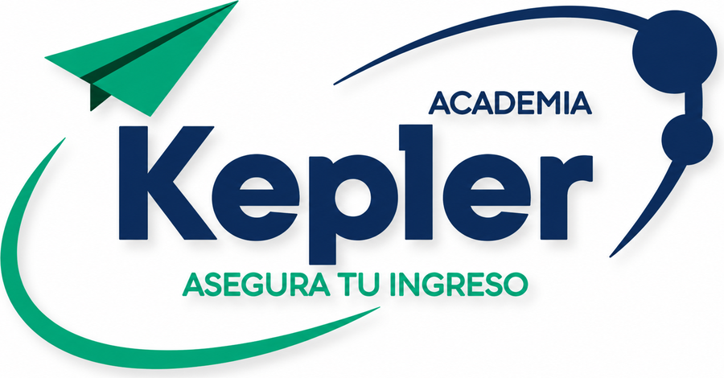
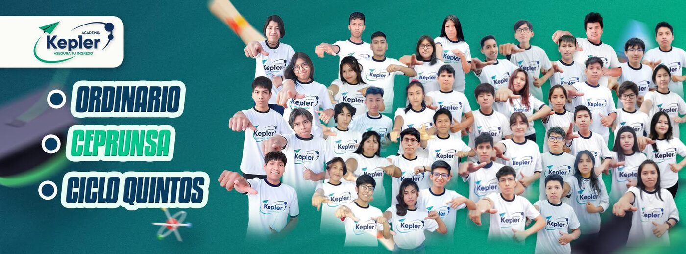
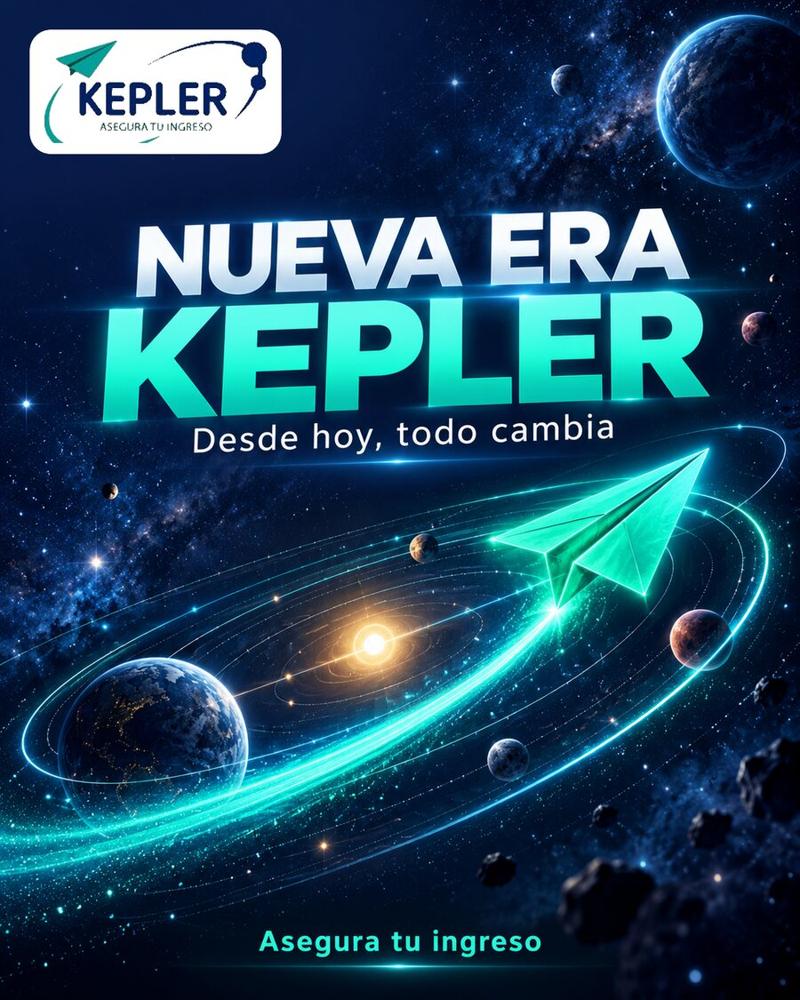
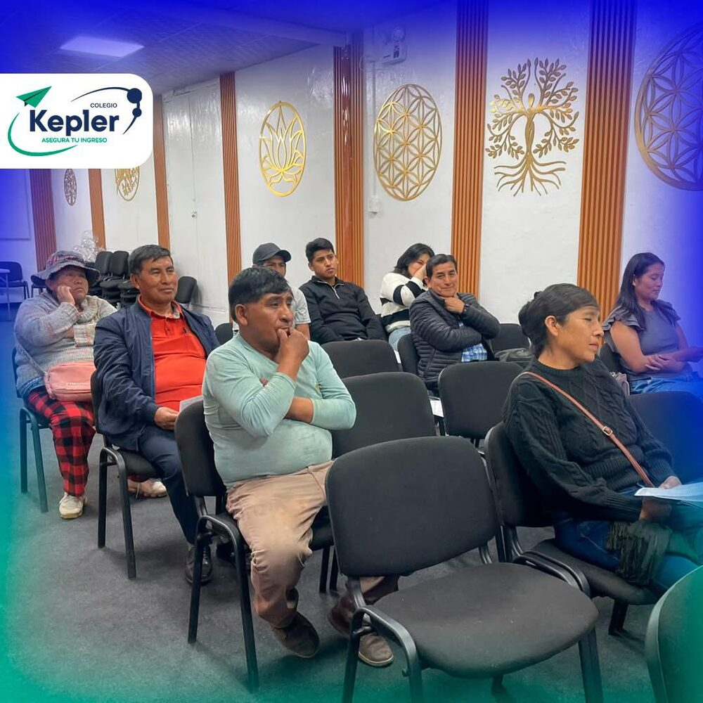
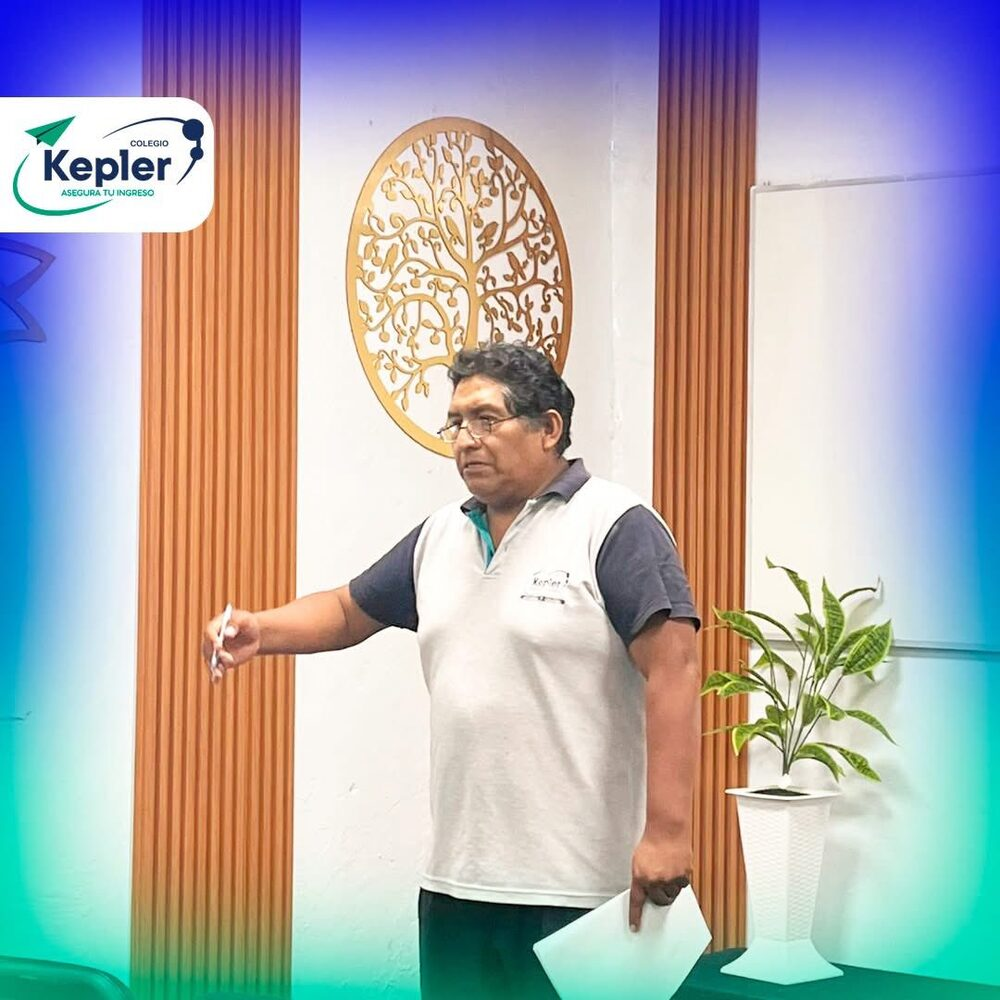
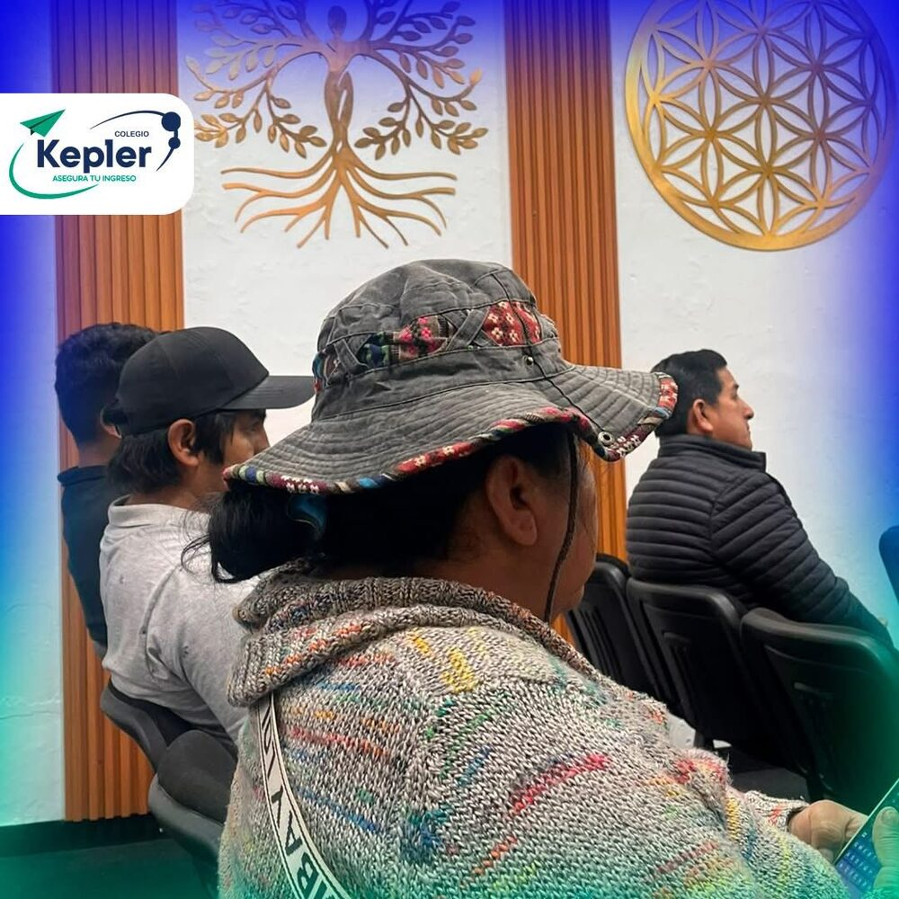
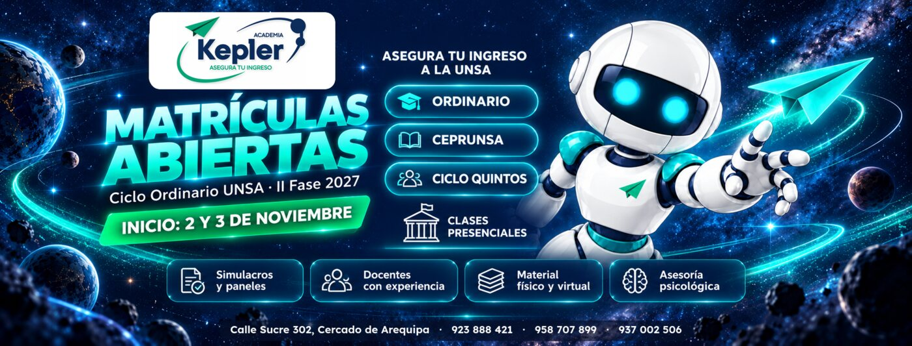
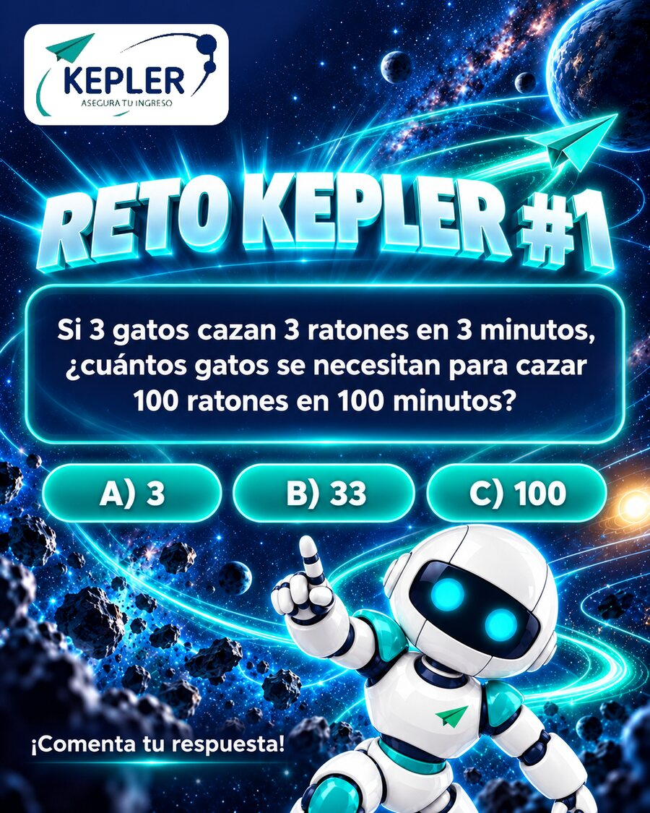

Ordinario
Prepárate para el examen de admisión ordinario de la UNSA con un plan intensivo de lunes a sábado.
- Turno mañana · 7:30 a. m. – 1:00 p. m.
- Seminarios lunes, miércoles y viernes
- Inicio: 2 y 3 de noviembre

Academia preuniversitaria en Arequipa. Preparación intensiva, docentes con experiencia y simulacros reales para que despegues hacia tu carrera.
Cada meta necesita su propia ruta. Encuentra la tuya y despega con Kepler.
Prepárate para el examen de admisión ordinario de la UNSA con un plan intensivo de lunes a sábado.
Refuerza tu preparación para el CEPRUNSA y asegura tu vacante con práctica constante y simulacros.
Para estudiantes de 5.° de secundaria que quieren ir un paso adelante y llegar listos a la admisión.
Despegamos en
Vacantes limitadas · Escríbenos para más información
Practica en condiciones reales de examen y mide tu avance con cada simulacro.
Una plana docente que conoce el examen de la UNSA y te acompaña en cada curso.
Material para complementar tu preparación en clase y desde casa.
Porque ingresar también es manejar la presión: te ayudamos a llegar enfocado y tranquilo.
Estudiantes, docentes y aulas que despegan juntos cada ciclo.







Si 3 gatos cazan 3 ratones en 3 minutos, ¿cuántos gatos se necesitan para cazar 100 ratones en 100 minutos?
Clases presenciales en el Cercado, a pocas cuadras de la Plaza de Armas.
Escríbenos o llámanos y te damos toda la información sobre horarios, matrícula y vacantes.